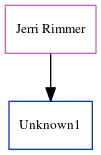

Unknown1
| [
Calendar
] | [
Surnames Index
] | [
Census Index
] | [
Family History
]
The child of
Jerri Rimmer
He. (Natural.).
Parents
Family Tree

Generated by
ged2site
. Last updated on Jun 12, 2024